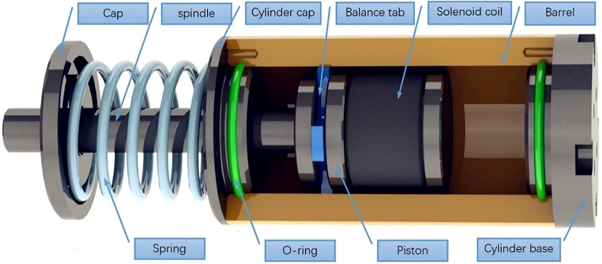

Career Objective
Seeking a job as a mechanical engineer where I can use my extensive skills to help your organization achieve its goal of excellence in the mechanical engineering industry.Engineer focused on quality who seeks to provide skills in systems evaluation to a mechanical engineering role.
Skills
Technical Skills
MS-Office CADD Cura Solid Works ZW3DPersonal Skills
Good leadership and co-ordination skills Good at networking and interpersonal skills Tiem management and dependability/ Able to work with deadlines Able to work in a team/ Focused at workOthers
Project
We have done rheological testing, and we have obtained the shear stress for different currents. From that, we have calculated the damping force, later on, used that damping force in quarter car vehicles.
Model would make significant contribution in improving the reaction time of the overall semi-active suspension system with MR damper.
A MR damper was formulated by extracting the polynomial expression which represents the dynamic characteristic of the MR damper. This model was used in a quarter car model and its performance in the passive and semi-active suspension was evaluated, and we have achieved a desired result.
Based on the results obtained in these analyses, it was identified that the parameters served well with the purpose of reducing the acceleration and vertical displacement of sprung mass in all classes of roads to improve the ride comfort and road holding of the vehicle.